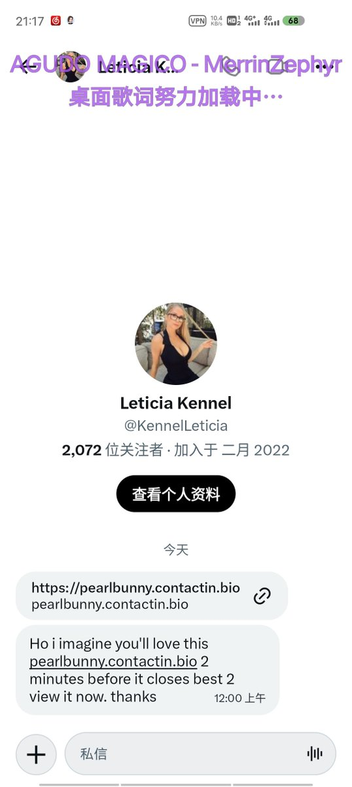

👾𝓽𝓱𝓮𝓯𝓸𝓻𝓮𝓿𝓮𝓻𝓲𝓻𝓲𝓼🍥
@theforeveriris
@a321908 没啥，contactin是一个服务聚合页，你点击里面的按钮它把你跳转到了一个包含随机子域名随机路径和广告联盟追踪参数（这个是骗子团伙做数据统计的）的 url，我顺手查了站点通过 Cloudflare 代理，基本上可以确定就那一个大规模群发的色情诈骗站点

321908🍥🏳️️⚧
@a321908
这什么意思😨😨😨😨 https://t.co/l7yX6JJj8g